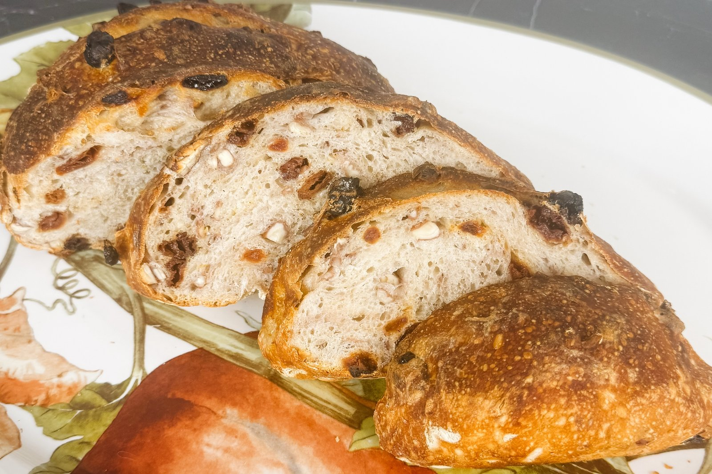

She’s the Goose

From the Oven · Holiday
A gently sweet holiday loaf with tart cranberries, orange zest and toasted pecans.
For the loaf
Toast and prepare. Toast the pecans at 350°F for 6–8 minutes; cool. If the cranberries are very dry, soak them in warm water for 10 minutes, then drain and pat thoroughly dry.
Mix. Combine the flour, starter, 300 g of the water and the honey. Rest 30 minutes. Work in the salt and the remaining 15 g water.
Fold in the additions. Complete four sets of stretch-and-folds at 30-minute intervals. During the second set, fold in the cranberries, cooled pecans, orange zest and cinnamon, if using.
Bulk ferment. Let the dough rise until airy, domed and about 40–60% larger, often 4–7 hours total from mixing.
Shape and chill. Pre-shape and rest 15–20 minutes; final-shape, tucking any exposed cranberries inside. Put seam-side up in a floured banneton, cover and refrigerate 12–16 hours.
Bake. Preheat a Dutch oven at 450°F for 30–45 minutes. Score the cold dough. Bake covered for 20 minutes at 450°F, then uncovered for 15–20 minutes at 425°F, to about 205–210°F inside. Shield any exposed fruit with foil if needed. Cool at least 90 minutes.
Use dried, not fresh, cranberries.
The orange zest gives flavor without changing the dough’s hydration.